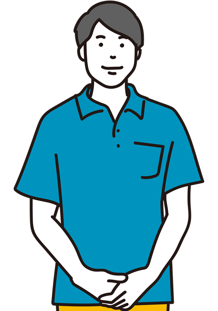

医療・介護施設の採用こんな悩み
ありませんか？
採用活動には
戦略が必要です
Before
自社のみでの
採用活動
採用担当者の負担が大きい
採用担当者は、採用の企画から媒体選定、応募者の対応や面談、選考プロセスなど幅広い業務を手掛けるため、リソースが必要です。
自社でノウハウを
もつ必要がある
採用を成功させるには、採用戦略・採用媒体の有効な活用などの知識やノウハウが必要です。これらを知らないと期待通りの効果が出ないことが多いのです。
効果がすぐには出ない
自社の知識だけで行うため、成功事例・失敗事例を経験しながらデータを蓄積する必要があり、効果が出るまでに一定の時間が必要になります。
After
ホワイトビアードと
共に行う採用活動
アウトソーシングで
社内の負担を軽減
採用にかかる負担をアウトソーシングすることで、社内担当者の作業負担を大幅に減らします。その分、本来の業務に集中することができます。
自社の採用を
客観的に評価できる
社内の施策を、自社で客観的に判断することは難しいものです。第三者の目線を入れることで、自社で気が付きにくい弱点を探ることができます。
介護関連施設に
焦点を絞った戦略
当社は介護関連にターゲット絞ったコンサルを行っています。業界特有の傾向などに詳しい専門家です。
専門職の採用は
なぜ難しいのか？
人材のミスマッチによる
離職
求めている人材と働きたい人の条件があわないまま採用してしまうケースでは、離職の可能性が高くなります。
有効求人倍率の
増加
専門職の人材は不足の傾向にあり、１人の求職者に対し、およそ3倍の求人があります。
高額な
１人あたりの採用費用
人材紹介会社を通して採用されるケースでは、紹介手数料はかなり高額なため、離職してしまったりすると、1人あたりの採用コストがペイしないこともあります。
サービスの特徴
お客様のニーズに合わせた
柔軟なコンサルティング
貴施設の現状を徹底分析
まずは、ヒアリングに基づいて、貴施設の採用に関する現状を細部まで徹底的に分析します。スタッフの定着率や採用活動の効果など、さまざまな視点から課題を洗い出し、今後の方向性を明確にします。この分析が、成功する採用戦略の基盤となります。
オーダーメイドの採用戦略立案
貴施設の特性やニーズに合わせた、オーダーメイドの採用戦略を立案します。競合施設との差別化を図り、理想の人材を引きつけるための独自のアプローチを設計します。これにより、効率的かつ効果的な採用活動を実現します。
戦略実行のサポートと追跡調整
立案した採用戦略を、専門のコンサルタントが実行段階でサポートします。採用面接にも対応します。
実行中の進捗を随時追跡し、必要に応じて戦略を調整します。これにより、計画通りの成果を確実に達成することができます。
結果に基づく戦略の最適化
採用活動の結果を詳細に分析し、戦略を継続的に改善します。成功事例や課題を反映させ、常に最適な採用戦略を維持します。これにより、貴施設の採用力を長期的に強化します。
導入者様の声
-
訪問看護ステーション
スタッフの募集は、随時行っていたのですが、折角費用をかけても、採用後なかなか定着しないのが悩みでした。面談の対応をお願いしたことで、ミスマッチな採用が減り、定着率が向上しました。
-
 訪問診療所
募集に対して人が集まらず、母数が足りない状況が慢性化していました。採用媒体や採用広告を見直すことで、応募者が増加し、より適切なフタッフを採用することが出来るようになりました。
数字で見る成果
サービスの流れ
よくあるご質問
こちらのサービスはパッケージプランでしょうか？?
当社の採用支援サービスは、パッケージプランではありません。
個別に相談を行い、御社の実情に応じた採用計画をご提案する、採用コンサルティングサービスになります。画一的なパッケージでは対応しにくい専門職の採用に特化しています。
最低年ヶ月から契約できますか？
採用計画は短期で結果が見えにくいため、最低でも6ヶ月のご契約をお願いしています。
初回相談は無料でしょうか？
初回の相談は無料です。お気軽にご連絡・ご相談ください。
応募者の面談などにも対応してもらえますか？
応募者のメールや面談の対応も可能です。ご相談時に、要望をお聞きして必要な範囲は当社がお引き受けいたします。
万が一削除された場合の保証とはどのような内容でしょうか？
投稿が一旦掲載後、削除された場合は、2回まで保証投稿をいたします（投稿から60日以内）。